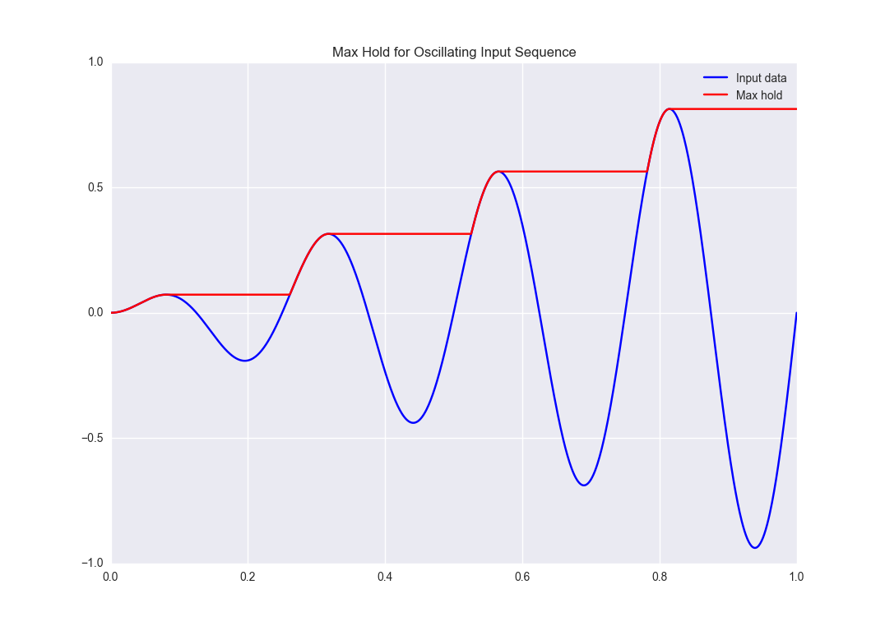
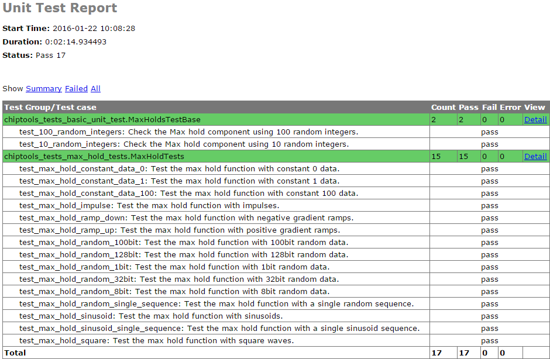
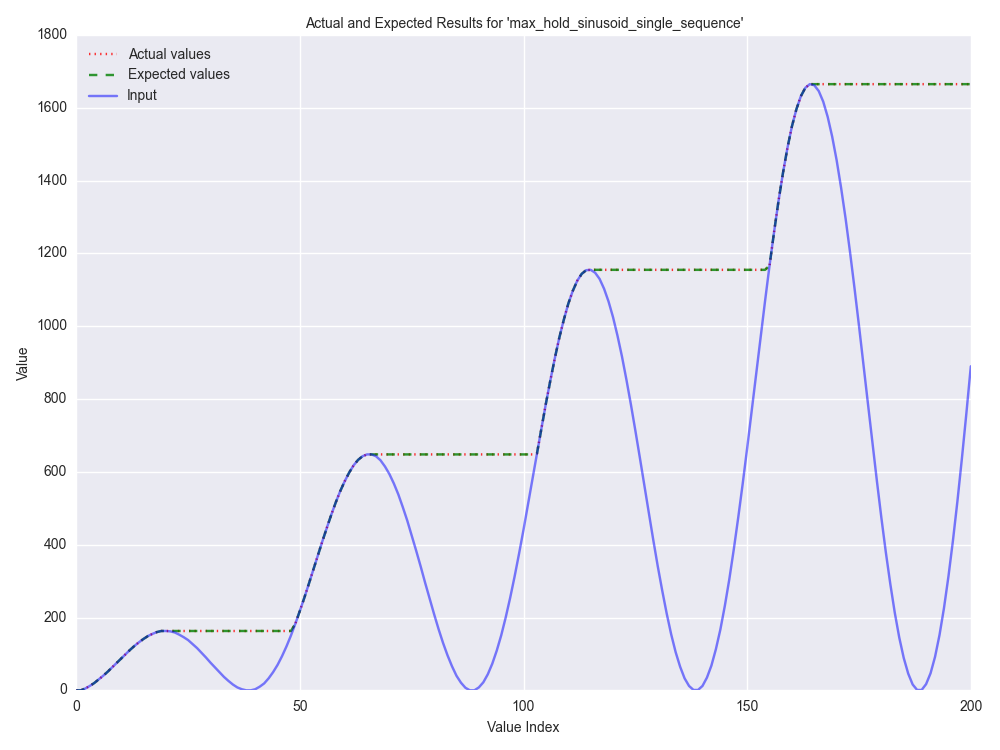

Examples: Max Hold
A demonstration of the ChipTools framework being used to simulate, test and build a simple VHDL component.
Introduction
The Max Hold example implements a basic component to output the maximum value of an input sequence until it is reset. For example, if such a component were to be fed an oscillating input with steadily increasing amplitude we would expect the following result:
This example will show you how you can use ChipTools to generate stimulus, check responses, create test reports and generate bit files for the Max Hold component.
Source Files
The Max Hold example is located in examples/max_hold.
The following source files belong to the Max Hold example:
Name |
Type |
Description |
|---|---|---|
max_hold.vhd |
VHDL |
Max Hold component (VHDL). |
pkg_max_hold.vhd |
VHDL |
Package for Max Hold component. |
tb_max_hold.vhd |
VHDL |
Testbench for Max Hold component (VHDL). |
max_hold.sv |
SystemVerilog |
Max Hold component (SystemVerilog). |
tb_max_hold.sv |
SystemVerilog |
Testbench for Max Hold component (SystemVerilog). |
Support files:
Name |
Type |
Description |
|---|---|---|
max_hold_tests.py |
Unit Test |
Collection of advanced unit tests. |
basic_unit_tests.py |
Unit Test |
Simple unit test. |
max_hold.xml |
Project |
Project file (using VHDL sources). |
max_hold_sv.xml |
Project |
Project file (using SystemVerilog sources). |
max_hold.ucf |
Constraints |
Constraints file when using the ISE synthesis flow. |
max_hold.xdc |
Constraints |
Constraints file when using the Vivado synthesis flow. |
simulation |
Folder |
Output directory for simulation tasks. |
synthesis |
Folder |
Output directory for synthesis tasks. |
The Max Hold component has been designed in both VHDL and SystemVerilog so that single-language simulators such as GHDL or Icarus can be used.
Creating the Project
This section will walk through the steps required to load and use the source files with ChipTools. The complete example is available in max_hold_project.py in the Max Hold project directory.
Initial Setup
First, import the ChipTools Project wrapper and create a project instance:
from chiptools.core.project import Project
# Create a new Project
project = Project()
The project wrapper provides a set of functions for loading source files and configuring a project.
Project Configuration
Projects should be configured with the following information before they are used:
Configuration Item |
Description |
|---|---|
simulation_directory |
Output directory for simulation tasks. |
synthesis_directory |
Output directory for synthesis tasks. |
fpga_part |
The FPGA part to target when performing a synthesis flow. |
simulator |
Name of the default simulator to use when performing simulations. |
synthesiser |
Name of the default synthesiser to use when performing synthesis. |
The project wrapper provides two methods for setting configuration data: add_config, which accepts a name, value pair as arguments or add_config_dict, which accepts a dictionary of name, value pairs.
The following code sample uses the add_config method to configure the project wrapper.
# Configure project, you may wish to edit some of these settings depending
# on which simulation/synthesis tools are installed on your system.
project.add_config('simulation_directory', 'simulation')
project.add_config('synthesis_directory', 'synthesis')
project.add_config('simulator', 'ghdl')
project.add_config('synthesiser', 'ise')
project.add_config('part', 'xc6slx9-csg324-2')
Apply Values to Generic Ports
FPGA designs can be parameterised via the use of a generic port on the top level component. You can assign values to top level port generics by using the add_generic method:
# Synthesis generics can be assigned via the add_generic command, in this
# example we set the data_width generic to 3:
project.add_generic('data_width', 3)
Add Source Files
Add the Max Hold source files to the project and assign them to a library:
# Source files for the max_hold component are added to the project. The Project
# **add_file** method accepts a file path and library name, if no library is
# specified it will default to 'work'. Other file attributes are available but
# not covered in this example.
project.add_file('max_hold.vhd', library='lib_max_hold')
project.add_file('pkg_max_hold.vhd', library='lib_max_hold')
The testbench is also added to the project under a different library. The optional argument synthesise is set to False when adding the testbench as we do not want to include it in the files sent to synthesis:
# When adding the testbench file we supply a 'synthesise' attribute and set it
# to 'False', this tells the synthesis tool not to try to synthesise this file.
# If not specified, 'synthesise' will default to 'True'
project.add_file(
'tb_max_hold.vhd',
library='lib_tb_max_hold',
synthesise=False
)
There are two unit test files provided for the Max Hold project, these can be added to the project using the add_unittest method:
# Unit tests have been written for the max_hold component and stored in
# max_hold_tests.py. The Project class provides an 'add_unittest' method for
# adding unit tests to the project, it expects a path to the unit test file.
project.add_unittest('max_hold_tests.py')
project.add_unittest('basic_unit_test.py')
Finally, the constraints files can be added to the project using the add_constraints method, which takes a path argument and an optional flow name argument which allows you to explicitly name which synthesis flow the constraints are intended for:
# The constraints are added to the project using the add_constraints method.
# The optional 'flow' argument is used to explicitly identify which synthesis
# flow the constraints are intended for (the default is to infer supported
# flows from the file extension).
project.add_constraints('max_hold.xdc', flow='vivado')
project.add_constraints('max_hold.ucf', flow='ise')
The project is now fully configured and can be synthesised, simulated or the unit test suite can be executed to check that the requirements are met:
# Simulate the project interactively by presenting the simulator GUI:
project.simulate(
library='lib_tb_max_hold',
entity='tb_max_hold',
gui=True,
tool_name='modelsim'
)
# Run the automated unit tests on the project (console simulation):
project.run_tests(tool_name='isim')
# Synthesise the project:
project.synthesise(
library='lib_max_hold',
entity='max_hold',
tool_name='vivado'
)
Alternatively the ChipTools command line can be launched on the project to enable the user to run project operations interactively:
# Launch the ChipTools command line with the project we just configured:
from chiptools.core.cli import CommandLine
CommandLine(project).cmdloop()
Project (XML) File
The Project configuration can also be captured as an XML file, which provides an alternative method of maintaining the project configuration.
The example project file max_hold.xml provides the same configuration as max_hold_project.py:
<project>
<config simulation_directory='simulation'/>
<config synthesis_directory='synthesis'/>
<config simulator='ghdl'/>
<config synthesiser='vivado'/>
<config part='xc7a100tcsg324-1'/>
<unittest path='max_hold_tests.py'/>
<unittest path='basic_unit_test.py'/>
<constraints path='max_hold.ucf' flow='ise'/>
<constraints path='max_hold.xdc' flow='vivado'/>
<generic data_width='3'/>
<library name='lib_max_hold'>
<file path='max_hold.vhd'/>
<file path='pkg_max_hold.vhd'/>
</library>
<library name='lib_tb_max_hold'>
<file
path='tb_max_hold.vhd'
synthesise='false'
/>
</library>
</project>
The project XML file can be loaded in the ChipTools command line interface using the load_project command:
$ chiptools
(cmd) load_project max_hold.xml
…or in a Python script:
from chiptools.core.project import Project
# Create a new Project
project = Project()
# Load a pre-existing project file
project.load_project('max_hold.xml')
Simulation and Test
To test the Max Hold component an accompanying testbench, tb_max_hold.vhd (VHDL) or tb_max_hold.sv (SystemVerilog), is used to feed the component data from a stimulus input text file and record the output values in an output text file. By using stimulus input files and output files we gain the freedom to use the language of our choice to generate stimulus and check results.
A simple stimulus file format is used by the testbench that allows a data write or a reset to be issued to the unit under test:
Stimulus File Format |
|
Reset (1-bit) (Binary) |
Data (N-bit) (Binary) |
Reset (1-bit) (Binary) |
Data (N-bit) (Binary) |
… Repeated |
|
The width of the binary data field must match the data width on the testbench generic. On each clock cycle a single line should be read from the stimulus file and the supplied values sent to the input of the Max Hold component.
We will use Python to create stimulus files in this format for the testbench.
Unit Tests
Note
The following example can be found in examples/max_hold/basic_unit_test.py
We can use Python to define tests for the Max Hold component by first importing the ChipToolsTest class from chiptools.testing.testloader
from chiptools.testing.testloader import ChipToolsTest
The ChipToolsTest class provides a wrapper around Python’s Unittest TestCase class that will manage simulation execution behind the scenes while our test cases are executed.
First off, create a ChipToolsTest class and define some basic information about the testbench:
class MaxHoldsTestBase(ChipToolsTest):
# Specify the duration your test should run for in seconds.
# If the test should run until the testbench aborts itself use 0.
duration = 0
# Testbench generics are defined in this dictionary.
# In this example we set the 'width' generic to 32, it can be overridden
# by your tests to check different configurations.
generics = {'data_width': 32}
# Specify the entity that this Test should target
entity = 'tb_max_hold'
# Specify the library that this Test should target
library = 'lib_tb_max_hold'
These attributes provide the basic information required by ChipTools to execute the testbench.
Tests are executed using the following sequence when using the Python Unittest framework:
Execute the unit test class setUp function if defined.
Execute the test case (a test case is any class method with a ‘test prefix’).
Execute the unit test class tearDown function if defined.
If the unit test class provides multiple testcases they can be executed individually or as a batch in ChipTools. The sequence above is executed for each individual test case.
The setUp function executes before each test and can be used to prepare any inputs that do not change for each test. In this example we will simply use the setUp function to prepare the test environment by defining paths to the input and output files to be used by the testbench:
def setUp(self):
"""Place any code that is required to prepare simulator inputs in this
method."""
# Set the paths for the input and output files using the
# 'simulation_root' attribute as the working directory
self.input_path = os.path.join(self.simulation_root, 'input.txt')
self.output_path = os.path.join(self.simulation_root, 'output.txt')
Similarly, the tearDown function executes at the end of each test, so we can use this to remove any files that were generated during the test:
def tearDown(self):
"""Insert any cleanup code to remove generated files in this method."""
os.remove(self.input_path)
os.remove(self.output_path)
To execute our tests we will create a function that performs the following operations:
Create an array of N random integers
Write the array of integers to the input stimulus file
Execute the simulation and check that the return code is 0
Read the output data generated by the simulation
Compare the output data to our Python model of the Max Hold function.
def run_random_data_test(self, n):
# Generate a list of n random integers
self.values = [random.randint(0, 2**32-1) for i in range(n)]
# Write the values to the testbench input file
with open(self.input_path, 'w') as f:
for value in self.values:
f.write(
'{0} {1}\n'.format(
'0', # Reset status (0)
bin(value)[2:].zfill(32), # write 32bit data
)
)
# Run the simulation
return_code, stdout, stderr = self.simulate()
self.assertEqual(return_code, 0)
# Read the simulation output
output_values = []
with open(self.output_path, 'r') as f:
data = f.readlines()
for valueIdx, value in enumerate(data):
# testbench response
output_values.append(int(value, 2)) # Binary to integer
# Use Python to work out the expected result from the original imput
max_hold = [
max(self.values[:i+1]) for i in range(len(self.values))
]
# Compare the expected result to what the Testbench returned:
self.assertListEqual(output_values, max_hold)
Now we can add extra functions to our class using the ‘test’ prefix to execute run_random_data_test with different parameters:
def test_10_random_integers(self):
"""Check the Max hold component using 10 random integers."""
self.run_random_data_test(10)
def test_100_random_integers(self):
"""Check the Max hold component using 100 random integers."""
self.run_random_data_test(100)
The above example is saved as basic_unit_test.py in the Max Hold example folder. We can run this test by invoking ChipTools in the example folder, loading the max_hold_basic_test.xml project and then adding and running the testsuite (simulator output has been hidden for presentation purposes):
$ chiptools
(Cmd) load_project max_hold_basic_test.xml
(Cmd) run_tests
ok test_100_random_integers (chiptools_tests_basic_unit_test.MaxHoldsTestBase)
ok test_10_random_integers (chiptools_tests_basic_unit_test.MaxHoldsTestBase)
Time Elapsed: 0:00:11.967197
(Cmd)
Unit Test Report
When ChipTools has finished running a test suite invoked with the run_tests command it will place a report called report.html in the simulation directory. The unit test report indicates which tests passed or failed and provides debug information on tests that have failed. A sample report for the full Max Hold unit test suite is given below:
Note
The test report is overwritten each time the unit test suite is executed, so backup old reports if you want to keep them.
Advanced Unit Tests
The previous example showed how a simple unit test can be created to test the Max Hold component with random stimulus. This approach can be extended to produce a large set of tests to thoroughly test the component and provide detailed information about how it is performing. The max_hold_tests.py file in the Max Hold example folder implements the following tests:
Test Name |
Data Width |
Description |
|---|---|---|
max_hold_constant_data_0 |
32 |
Continuous data test using zero |
max_hold_constant_data_1 |
32 |
Continuous data test using 1 |
max_hold_constant_data_100 |
32 |
Continuous data test using 100 |
max_hold_impulse_test |
32 |
The first data point is nonzero followed by constant zero data. |
max_hold_ramp_down_test |
32 |
Successive random length sequences of reducing values. |
max_hold_ramp_up_test |
32 |
Successive random length sequences of increasing values. |
max_hold_random_single_sequence |
32 |
Single sequence of 200 random values. |
max_hold_random_tests_100bit |
100 |
Successive random length sequences of 100bit random values. |
max_hold_random_tests_128bit |
128 |
Successive random length sequences of 128bit random values. |
max_hold_random_tests_1bit |
1 |
Successive random length sequences of 1bit random values. |
max_hold_random_tests_32bit |
32 |
Successive random length sequences of 32bit random values. |
max_hold_random_tests_8bit |
8 |
Successive random length sequences of 8bit random values. |
max_hold_sinusoid_single_sequence |
12 |
Single sinusoidal sequence. |
max_hold_sinusoid_test |
12 |
Multiple sinusoidal sequences of random length. |
max_hold_square_test |
8 |
Multiple toggling sequences of random length. |
If Matplotlib is installed the Unit Test will also create an output image for each test in the simulation folder to show a graph of the input data with the model data and the Max Hold component output data. For example, the max_hold_sinusoid_single_sequence test produces the following output:
Note
For this example, graph generation requires Matplotlib (optionally with Seaborn)
Plots such as these provide a powerful diagnostic tool when debugging components or analysing performance.
Synthesis and Build
Warning
The Max Hold example is provided to demonstrate the ChipTools build process, do not attempt to use the bitfiles generated from this project on an FPGA as the IO constraints are not fully defined and have not been checked. Using the bitfiles generated from this project may cause damage to your device.
The Max Hold example includes the files necessary for it to be built using the Xilinx ISE, Vivado and Quartus synthesis flows; the project files provided in the example are configured to use the Vivado synthesis flow by default.
Building with the Command Line Interface
To build the design using the ChipTools command line, first open a terminal in the Max Hold example directory and invoke the ChipTools command line:
$ chiptools
-------------------------------------------------------------------------------
ChipTools (version: 0.1.50)
Type 'help' to get started.
Type 'load_project <path>' to load a project.
The current directory contains the following projects:
1: max_hold.xml
2: max_hold_basic_test.xml
-------------------------------------------------------------------------------
(cmd)
Two projects should be listed by ChipTools in the current directory, load the max_hold.xml project by using the load_project command:
(Cmd) load_project max_hold.xml
[INFO] Loading max_hold.xml in current working directory: max_hold
[INFO] Loading project: max_hold.xml
[INFO] Parsing: max_hold.xml synthesis=None
(Cmd)
We can check which files will be sent to the synthesis tool by using the show_synthesis_fileset command:
(Cmd) show_synthesis_fileset
[INFO] Library: lib_max_hold
[INFO] max_hold.vhd
[INFO] pkg_max_hold.vhd
[INFO] Library: lib_tb_max_hold
Note that the Max Hold testbench tb_max_hold.vhd is excluded from synthesis, this is due to the synthesis=’false’ attribute on the testbench file tag in the max_hold.xml project file.
An FPGA build can be initiated by using the synthesise command, which accepts the following arguments:
Argument |
Description |
|---|---|
target |
The library and entity to synthesise, using the format library.entity |
flow |
The synthesis flow to use. The default value is taken from the project config. |
part |
The fpga part to use. The default value is taken from the project config. |
To build the Max Hold project using the default synthesis flow (Vivado) for the default FPGA part (xc7a100tcsg324-1) simply issue the synthesise command with the target library and entity:
(Cmd) synthesise lib_max_hold.max_hold
To build the Max Hold project using Altera Quartus, issue the synthesise command with the flow set to ‘quartus’ and the part set to ‘EP3C40F484C6’.
(Cmd) synthesise lib_max_hold.max_hold quartus EP3C40F484C6
To build the Max Hold project using Xilinx ISE, issue the synthesise command with the flow set to ‘ise’ and the part set to ‘xc6slx9-csg324-2’.
(Cmd) synthesise lib_max_hold.max_hold ise xc6slx9-csg324-2
While the build is running any messages generated by the synthesis tool will be displayed in the ChipTools command line. When the build has completed ChipTools will store any build outputs in a timestamped archive in the synthesis output directory specified in the project settings:
[INFO] Build successful, checking reports for unacceptable messages...
[INFO] Synthesis completed, saving output to archive...
[INFO] Added: max_hold_synth_151215_134719
[INFO] ...done
(cmd)
If there is an error during build, ChipTools will store any outputs generated by the synthesis tool in a timestamped archive with an ‘ERROR’ name prefix.